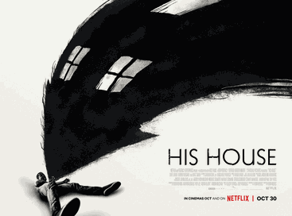
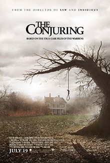
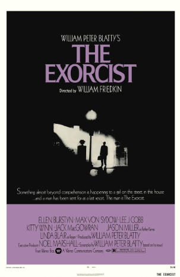

In the summer of 1989, a group of bullied kids band together to destroy a shape-shifting monster, which disguises itself as a clown and preys on the children of Derry, their small Maine town.

His House (2020) is a folk horror film that tops Rotten Tomatoes' all-time horror list with a perfect 100% Tomatometer score.

The Conjuring (2013) is a supernatural horror film that follows paranormal investigators Ed and Lorraine Warren as they help a family terrorized by a dark presence in their farmhouse.

Under the Shadow (2016) is a Iranian horror film that follows a woman who becomes convinced that her daughter is being haunted by a malevolent spirit.

Perfect Blue (1997) is a psychological horror film that follows a pop singer who becomes obsessed with her own identity and reality.

The Exorcist (1973) is a supernatural horror film that follows the story of a young girl who is possessed by a demonic entity.

The Witch (2015) is a horror film that follows a Puritan family in 1630s New England who are torn apart by the forces of evil.